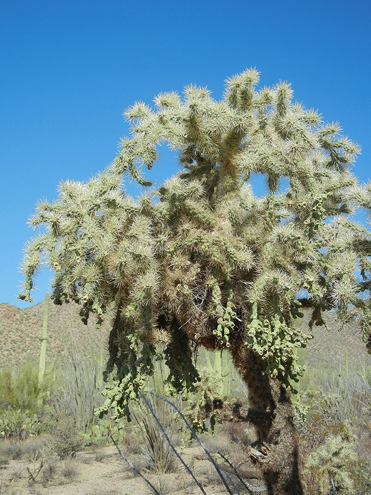
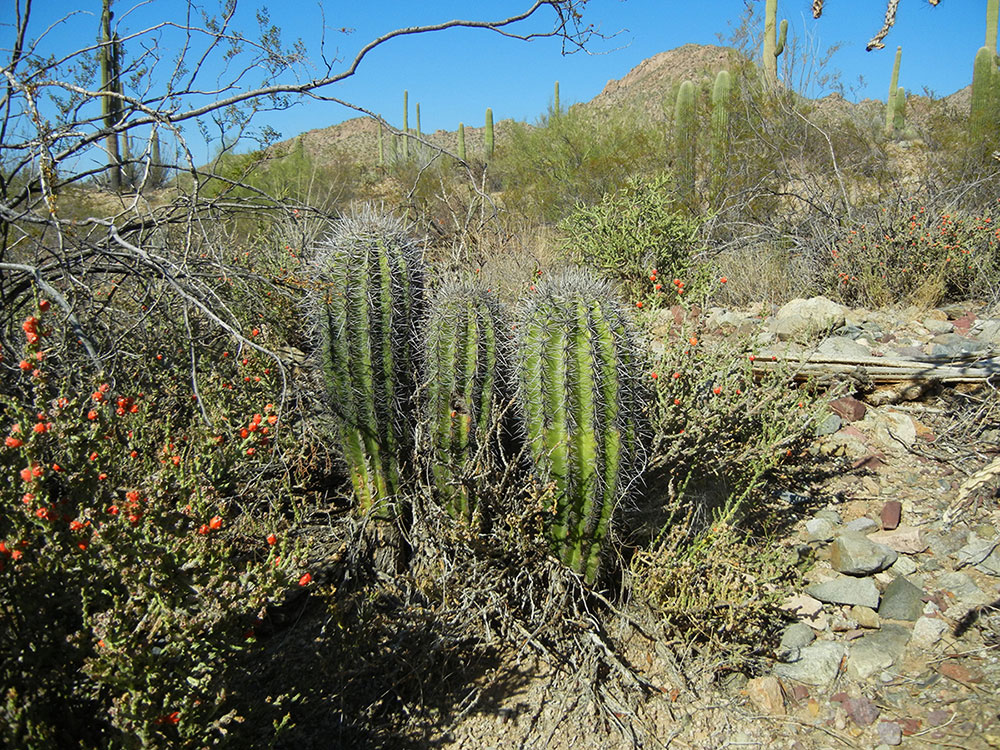
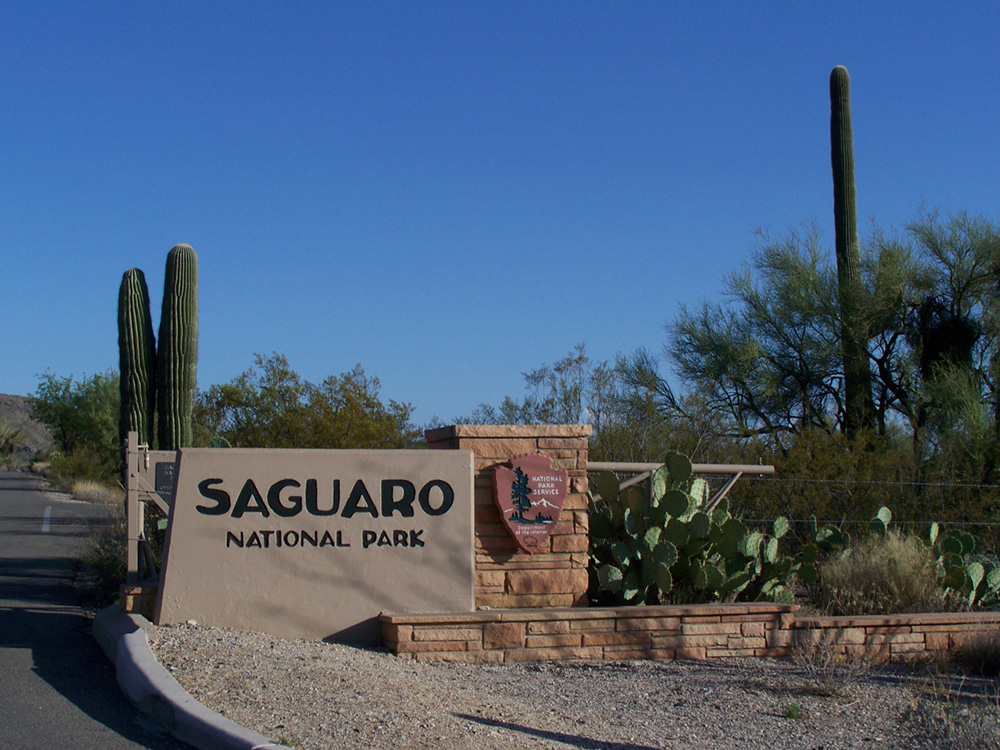
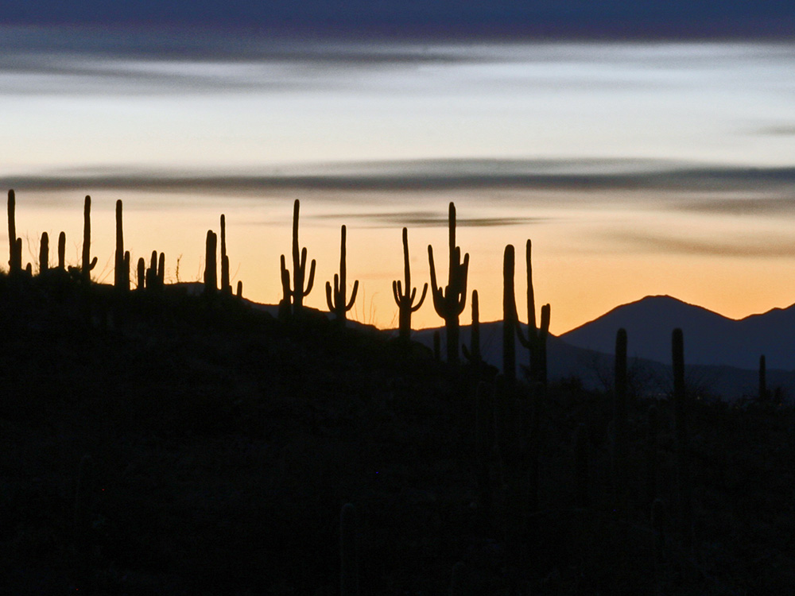

Expansive desert and mountain landscape featuring dense saguaro cactus forests, scenic drives, hiking trails, and elevations that rise into diverse ecological zones.
General Information
- Hours:
-
Vehicle access: 5am to 8:30pm daily
Open for hiking and biking 24 hours a day - Fees:
-
Private vehicle: $25 (valid for 7 days)
Motorcycle: $20
Individual (walk/bike): $15 - Pet Policy:
- Leashed pets are allowed on roads, in picnic areas and on a few designated trails; not permitted on other trails, in the wilderness or inside the visitor center
- Closest cities with hotels:
- Tucson, AZ (adjacent to the park, about 15 miles from downtown)
- Seasons:
- Open year-round; best from October to April for cooler weather and spring wildflowers
Saguaros bloom late April to June
Summer highs in the desert often exceed 100°F; higher elevations are much cooler - Location:
- 3693 S Old Spanish Trail, Tucson, AZ 85730
- Website:
- nps.gov/sagu
How to Get There
From Tucson (20 mi): Drive east on Broadway Boulevard to Freeman Road, turn right and continue south for about 3 miles, then turn left onto Old Spanish Trail and continue a short distance to the park entrance.
Overview
The Rincon Mountain District, often called Saguaro East, is the larger and older of Saguaro National Park’s two units, located on the eastern edge of Tucson. Its lower elevations hold a classic Sonoran Desert cactus forest of mature saguaros, while the Rincon Mountains rise steeply behind it to 8,666 feet at Mica Mountain. This dramatic elevation change makes the district one of Arizona’s “sky islands,” passing through desert scrub, desert grassland, oak woodland, pine-oak forest and mixed conifer forest within just a few miles.
People come to the Rincon Mountain District for its easy-to-reach saguaro scenery, its paved scenic loop drive and its extensive wilderness. Most visitors explore the cactus forest by car, bike or on short walks, while hikers and backpackers head into the Saguaro Wilderness, which covers most of the district and offers some of the most remote and rugged hiking in southern Arizona. Compared with the Tucson Mountain District, the saguaros here are generally older and more widely spaced, and the landscape feels larger and more varied.
Sightseeing and Scenic Drives
The highlight for most visitors is the Cactus Forest Scenic Loop Drive, an 8-mile paved, one-way road that begins near the visitor center and winds through rolling hills of saguaro forest with the Rincon Mountains as a backdrop. Pull-offs, overlooks and picnic areas along the drive include the Mica View and Javelina picnic areas, the Javelina Rocks formations and several viewpoints over the Tucson Valley and the Santa Catalina Mountains. The Desert Ecology Trail and the trailhead to the Freeman Homestead are also along or near the loop. The road is narrow with tight curves and steep dips, so vehicles longer than 35 feet and trailers wider than 8 feet are not permitted.
Hiking
The district has more than 100 miles of trails, ranging from short, easy walks to multi-day wilderness treks. Easy options include the paved Desert Ecology Trail and the Freeman Homestead Trail, which loops past the remains of a 1920s adobe homestead, as well as the relatively flat Cactus Forest and Mica View trails. Moderate hikes include the Douglas Spring Trail to Bridal Wreath Falls, a seasonal waterfall that flows best after winter rains or the summer monsoon, and the trails to the historic Garwood Dam and Wildhorse Tank. For a serious challenge, the Tanque Verde Ridge Trail climbs about 4,600 feet to Juniper Basin and Tanque Verde Peak, and longer routes lead to Manning Camp and Mica Mountain high in the Rincons. Desert trails are fully exposed, so hikers should carry plenty of water and avoid midday heat.
Other Activities
Biking is one of the most popular activities in the district, with road cyclists riding the Cactus Forest Loop Drive and mountain bikers using the Cactus Forest Trail and the Hope Camp Trail. Horseback riding is permitted on many trails, and backpacking into the Saguaro Wilderness is a highlight for experienced hikers. Ranger-led programs are offered during the cooler months, and the district is good for wildlife watching, including javelina, coyotes, Gila monsters, desert tortoises, roadrunners and, in the higher elevations, black bears, white-tailed deer and Mexican spotted owls. Nearby attractions on Tucson’s east side include Colossal Cave Mountain Park, the Pima Air and Space Museum, Sabino Canyon and the scenic drive up Mount Lemmon.
Getting to the Rincon Mountain District
The Rincon Mountain District is located on the eastern edge of Tucson in southern Arizona, about 15 miles east of downtown, and is easily accessed by car. From downtown, visitors typically drive east on Broadway Boulevard or 22nd Street to Freeman Road, then south to Old Spanish Trail and the park entrance, a drive of about 30 minutes. From Interstate 10, travelers can exit at Houghton Road and head north to Old Spanish Trail. Tucson International Airport is about 25 to 30 minutes away, and Phoenix Sky Harbor International Airport is roughly a two-hour drive. There is no public transportation to the park.
Seasons
The park is open year-round, with the most pleasant weather from October through April. Late winter and spring bring wildflowers and blooming cacti, and the saguaros bloom from late April through June. Summers are very hot in the lower desert, often topping 100°F, though temperatures in the high country around Manning Camp can be 20 to 30 degrees cooler, making summer a popular time for backpacking trips into the mountains. The summer monsoon, usually July through September, brings afternoon thunderstorms, lightning and flash flooding, while winter can bring snow to the upper elevations of the Rincon Mountains even when the desert floor stays mild.
Camping and Lodging
There is no drive-in campground or lodging in the Rincon Mountain District. Camping is available only at six backcountry campgrounds in the Saguaro Wilderness, including Douglas Spring, Grass Shack, Juniper Basin, Happy Valley, Spud Rock and Manning Camp, all of which require a backcountry permit and are reached only on foot or horseback. Most visitors stay in Tucson, where the east side of the city offers numerous hotels within a short drive of the park, and the city as a whole has options ranging from budget motels to luxury resorts and guest ranches. Nearby camping options include Colossal Cave Mountain Park, Catalina State Park north of Tucson and the Coronado National Forest campgrounds along the Mount Lemmon Highway.
Visitor Centers
The Rincon Mountain Visitor Center, located at the park entrance on Old Spanish Trail, is the starting point for most visits. It offers exhibits on the Sonoran Desert and the sky island ecosystems of the Rincon Mountains, an orientation film, a bookstore, restrooms, water and ranger information, and it is where backpackers obtain wilderness permits. A short desert garden outside the building introduces many of the plants found along the trails. The park’s second visitor center, the Red Hills Visitor Center, is located in the Tucson Mountain District on the west side of Tucson.
This article uses material from the Wikipedia article "Saguaro National Park", which is released under the Creative Commons Attribution-Share-Alike License 3.0, and information from the National Park Service "Saguaro National Park" website.
Featured Trails
Cactus Forest Scenic Loop Drive
Paved one-way scenic loop winding through a dense Sonoran Desert landscape filled with towering saguaro cacti, offering frequent overlooks, trailheads, and expansive mountain views.
Desert Ecology Trail
0.25 mile loop, Under 10 feet elevation gain, Easy
Short paved interpretive loop featuring educational signage about desert plants, wildlife, and ecosystems with accessible pathways and benches along the route.
Freeman Homestead House
1 mile loop, 50 feet elevation gain, Easy
Remnants of an early 20th-century adobe homestead site reached by a short interpretive desert trail featuring native vegetation and historical markers.

._(b4065910-c2b2-400e-a99c-9c1379ef3cb9).jpg){kind=link}

,_Arizona_(6715f5bb-4bb8-49bd-a9e1-b59d8baf5318).jpg){kind=link}
-1000.jpg)
.JPG){kind=link}


